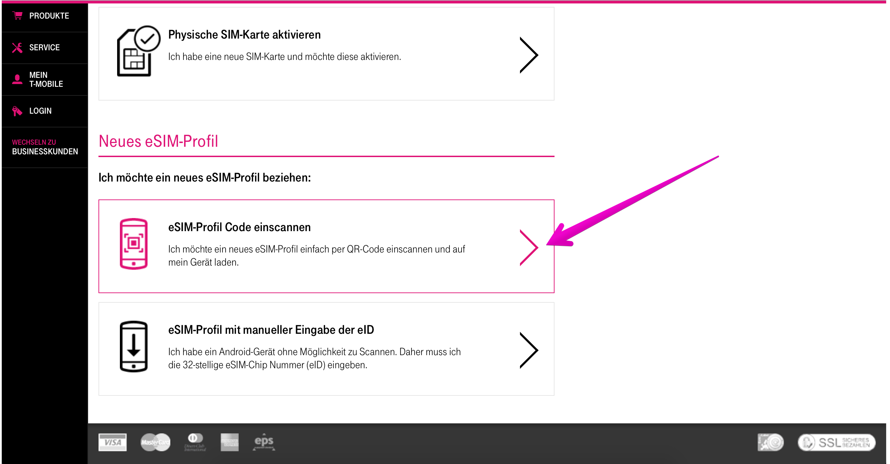
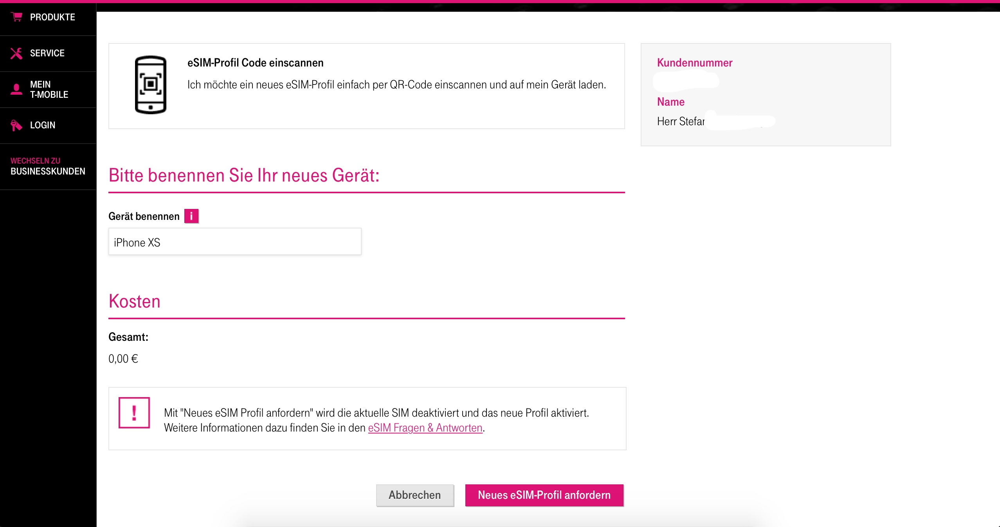
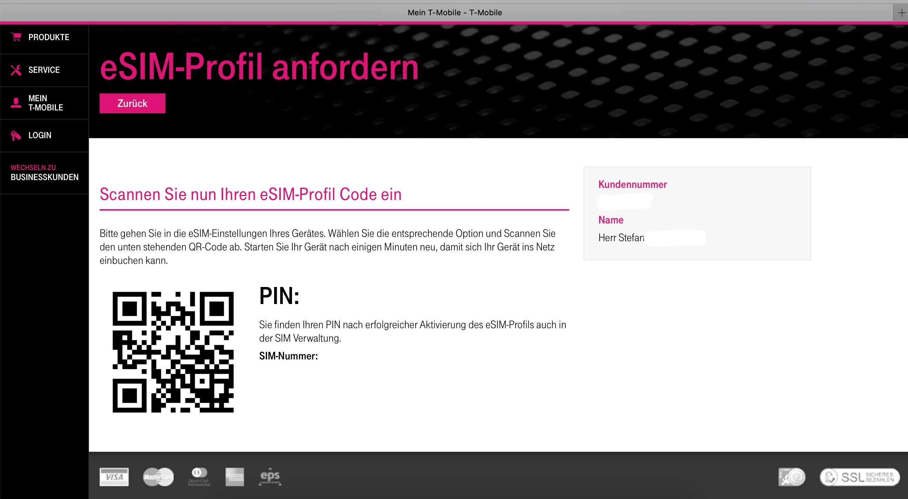
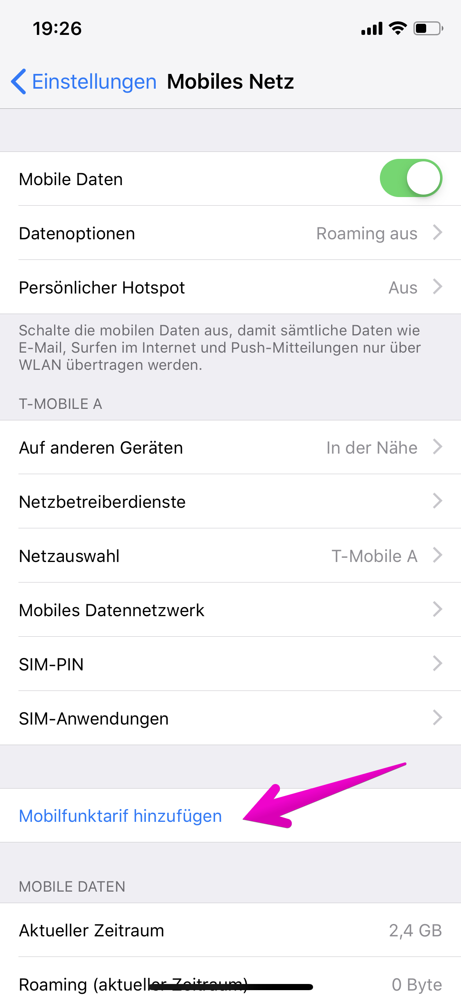
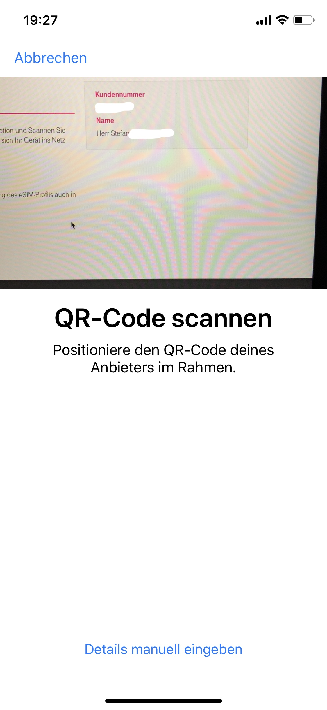

auf der gestrigen Apple Keynote wurded ihr als Unterstützer der eSim genannt. Habt ihr da schon Infos wann das ganze startet? Gibts da dann spezielle Tarife oder kann ich einfach mit meinen Tarif (Smartphone) statt einer normalen SIM eine eSim haben?
Wie sieht’s da mit der Apple Watch aus? Multi Sim Möglichkeit?
Fragen über Fragen
Grüße
Stefan
Gast
Hallo!
Dual-SIM iPhone
Apple wird später in diesem Jahr durch ein Softwareupdate die Dual-SIM freischalten und es wird dann auch voll in Österreich nutzbar sein. Zum Start ist diese Funktion daher noch nicht verfügbar, kann aber ohne weitere Abstriche zu machen, herkömmlich mit einer "normalen" SIM genutzt werden.
Es wird nicht so sein, dass aktuell erworbene iPhones dann nur über die herkömmliche SIM bei uns betrieben werden kann, sondern wir werden den Wechsel auch anwenderfreundlich gestalten.
Apple Watch
Zum Thema Apple Watch mit eSIM emfehle ich dir folgenden Thread, hier sind schon viele Einzelheiten besprochen worden. Diese Informationen gelten für die Apple Watch 3 & 4 mit Mobilfunk.
Die Watch ohne Mobilfunk wird in Kürze in ausgewählten Shops verfügbar sein.
Wenn es noch weitere Fragen rund um das neue iPhone gibt, bitte einfach hier stellen.
LG Phil
Bearbeitet
von Georgie
Thema nicht mehr aktuell, Link füfhrt auf 404-Seite
IT-Freak
Ich habe mir gerade den Blog Artikel durchgelesen. Wow, es ist viel versprechend, dass man die ESim komplett digital installieren kann. Ich kenne aus Deutschland "Plastikkarten" und Briefe mit QR als ESIM.
Wie wird die Aktivierung ablaufen? Gibt man dann die T Mobile Zugangsdaten im IPhone ein, läuft es über einen QR Code oder wird die SIM irgenwie beim Kauf bei Apple hinterlegt und wenn man das neuen Gerät auspackt ist man sofort über den T Mobile Vertrag online?
Der genaue Aktivierungsvorgang wird noch rechtzeitig kommuniziert werden im Detail. Hier bitte ich dich noch um ein wenig Geduld. Es dauert noch ein bisschen bis das Feature verfügbar ist. Die Aktivierung mittels QR-Code wird es voraussichtlich bei uns auch geben.
LG
MarioM
Bin schon gespannt
Werde das XS auf jeden Fall heute mal vorbestellen
Stoffii
Danke für die Infos Phil
Hast da auch schon Details ob der "Sim Karten Tausch" dann etwas kostet?
vor 3 Stunden schrieb MarioM:
Bin schon gespannt
Werde das XS auf jeden Fall heute mal vorbestellen
Willkommen im Club
MarioM
vor 20 Stunden schrieb Stoffii:
Danke für die Infos Phil
Hast da auch schon Details ob der "Sim Karten Tausch" dann etwas kostet?
Willkommen im Club
Danke
Wobei ich unschlüssig bin, ob ich nicht doch das XS Max nehmen soll
Stoffii
vor 4 Stunden schrieb MarioM:
Danke
Wobei ich unschlüssig bin, ob ich nicht doch das XS Max nehmen soll
Wenn man so ein großes Display haben will ist es auf jedenfall genial ??
MarioM
vor 1 Minute schrieb Stoffii:
Wenn man so ein großes Display haben will ist es auf jedenfall genial ??
Wobei das XS eh ein größeres Display hat als das iPhone 7 Plus. Also sollte das schon passen
IT-Freak
Bei Max geht die Display Größe schon fast in die Richtung eines Tablets.
Mir ist irgendwie das IPhone XR sympathischer.
vor 34 Minuten schrieb MarioM:
Wobei das XS eh ein größeres Display hat als das iPhone 7 Plus. Also sollte das schon passen
Ja aber das XR is ja wieder so eine Art "SE" oder nicht? ... Klingt zumindest danach ...
IT-Freak
vor 49 Minuten schrieb MarioM:
Ja aber das XR is ja wieder so eine Art "SE" oder nicht? ... Klingt zumindest danach ...
Irgendwie schon. Auf den ersten Blick ist bein den Technischen Details nicht all zu viel unterschied. Ich habe es mir erst jetzt in der GSM Arena angesehen. 3 GB RAM hört sich doch etwas nach 2014, somit trifft es 5C etwas besser.
MarioM
Grundsätzlich schaue ich nicht wirklich auf die technischen Details. Für mich reicht die Hardware sowieso. Egal, welche Version ich jetzt nehme
Ich pass dann schon eher auf die Größe auf ...
Gast
Am 15.9.2018 um 13:36 schrieb Stoffii:
Hast da auch schon Details ob der "Sim Karten Tausch" dann etwas kostet?
Nein, habe ich noch keine konkreten Informationen dazu. Werde sie aber nachbringen sobald ich es weiß, wird aber noch ein bisschen dauern.
Stoffii
vor 22 Stunden schrieb MarioM:
Ja aber das XR is ja wieder so eine Art "SE" oder nicht? ... Klingt zumindest danach ...
Nicht wirklich. Eher der Nachfolger vom iPhone 8. Also Leistung ist wie bei Xs, Camera ist selbe wie vom Xs (Single Lens statt Dual Lens). Display und RAM halt Unterschied.
vor 8 Stunden schrieb Phil:
Nein, habe ich noch keine konkreten Informationen dazu. Werde sie aber nachbringen sobald ich es weiß, wird aber noch ein bisschen dauern.
Perfekt Danke
MarioM
Alles klar
Macht auch durchaus Sinn
Stoffii
Ab 22.10 geht es beim iPhone XS (MAX) mit der eSim los.
Laut TMA Hotline von heute eSIM auch für Apple Watch in 4 Wochen? kann das jemand bestätigen? DANKE
Stoffii
vor 3 Stunden schrieb nice1:
Laut TMA Hotline von heute eSIM auch für Apple Watch in 4 Wochen? kann das jemand bestätigen? DANKE
Leider nix offizielles dazu gehört
Stoffii
So. iOS 12.1 ist ja nun offiziell veröffentlicht. Ich hab das natürlich gleich mal genützt um die eSIM zu aktivieren. Ging alles ganz easy, aber hier mal eine kurze Zusammenfassung:
Um eine eSIM zu aktivieren müsst ihr folgende Schritte ausführen:
unter Mein T-Mobile -> Vertrag & Tarif -> SIM Aktivierung/Verwaltung
Neues eSIM Profil -> am einfachsten beim iPhone "eSIM Profil Code einscannen"

Das Gerät benennen und anfordern. Achtung. Sobald ihr auf anfordern klickt wird eure aktuelle (physische) SIM deaktiviert. Um die eSIM dann noch erfolgreich zu aktivieren muss sich euer Smartphone in einem WiFi befinden.

Diese Seite nun geöffnet lassen und am iPhone weitermachen.

Öffnet eure iPhone Einstellungen. Klickt auf "Mobiles Netz" danach auf Mobilfunktarif hinzufügen

Nun scannt ihr einfach den QR Code von der T-Mobile Seite

Jetzt klickt ihr nur noch auf "Mobilfunktarif hinzufügen" und fertig. Falls ihr die DUAL Sim Funktion des iPhone nutzen wollt, könnt ihr nun einstellen welche SIM als Standard verwendet werden soll.
Wenn man die interne Sim danach entfernt funktioniert allerdings der persönliche Hotspot nicht mehr. Demnächst soll es dazu ein Update geben, vorläufig also die interne (nicht mehr funktionierende) Sim im Telefon lassen.
lg
Stoffii
vor einer Stunde schrieb sac-:
Wenn man die interne Sim danach entfernt funktioniert allerdings der persönliche Hotspot nicht mehr. Demnächst soll es dazu ein Update geben, vorläufig also die interne (nicht mehr funktionierende) Sim im Telefon lassen.
lg
Danke für die Info. Gerade probiert, bei mir geht es. Hab nur noch die eSIM aktiv, alte physische SIM entfernt. (Auch aus den Einstellungen entfernt, vl hakt es hier). Hast schon einen Neustart probiert?
nice1
...die Frage ist jetzt, ob es mit der LTE apple watch ebenso funktioniert?
wenn ich eine multiSIM versuchen würde auf der watch auf Esim umzustellen?
Stoffii
vor 2 Stunden schrieb nice1:
...die Frage ist jetzt, ob es mit der LTE apple watch ebenso funktioniert?
wenn ich eine multiSIM versuchen würde auf der watch auf Esim umzustellen?
Soweit ich weiß ist die eSIM bei Apple Watch != eSIM bei Smartphones.
nice1
...habe es gestern auch noch mit mehreren Anläufen geschafft die e-sim am iPhone zu aktivieren!
jetzt heisst es warten auf die e-sim für die watch!
angeblich fehlt noch ein "Entitlement" server den angeblich apple für die e-sim in der watch verlangt.
Stoffii
Hello T-Mobile
auf der gestrigen Apple Keynote wurded ihr als Unterstützer der eSim genannt. Habt ihr da schon Infos wann das ganze startet? Gibts da dann spezielle Tarife oder kann ich einfach mit meinen Tarif (Smartphone) statt einer normalen SIM eine eSim haben?
Wie sieht’s da mit der Apple Watch aus? Multi Sim Möglichkeit?
Fragen über Fragen
Grüße
Stefan
Wolfgang Mair
Es wird keine Unterstützung von T-Mobile für die Apple Watch geben. Die Apple Watch verwendet bei ESIM ein anderes Zertifikat als das iPhone. Kaufe mir jetzt die Watch ohne LTE. Verstehe nicht, warum Apple hier unterschiedliche Zertifikate verwendet.
{kind=link}
{kind=link}
{kind=link}
{kind=link}
{kind=link}
{kind=link}